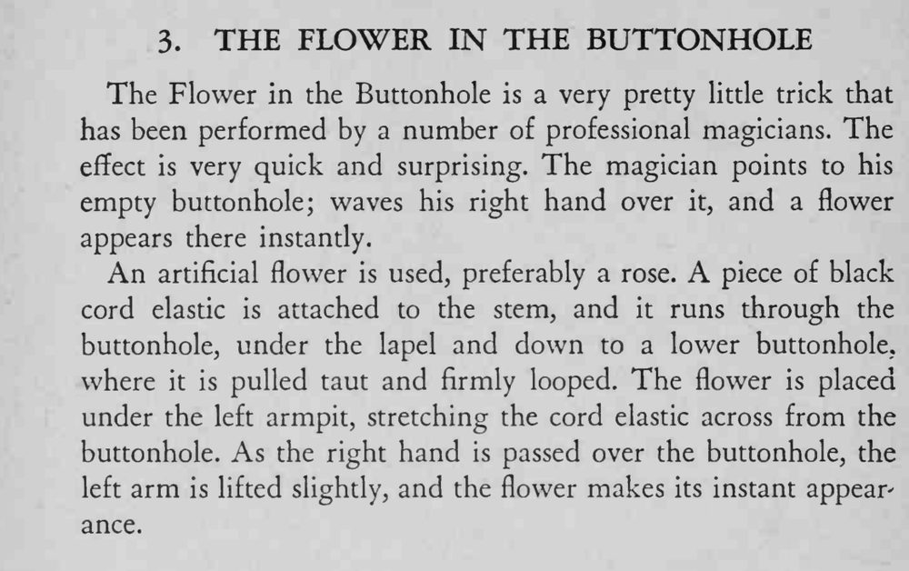

魔术师指指自己空空的扣眼，右手一挥，一朵花立刻出现在扣眼上。
松紧绳长度要事先试准，抬臂的幅度越小越自然。

The Flower in the Buttonhole is a very pretty little trick that has been performed by a number of professional magicians. The effect is very quick and surprising. The magician points to his empty buttonhole; waves his right hand over it, and a flower appears there instantly. An A artificial flower is used, preferably a rose. piece of black cord elastic is attached to the stem, and it runs through the buttonhole, under the lapel and down to a lower buttonhole, where it is pulled taut and firmly looped. The flower is placed under the left armpit, stretching the cord elastic across from the buttonhole. As the right hand is passed over the buttonhole, the left arm is lifted slightly, and the flower makes its instant appear ance.